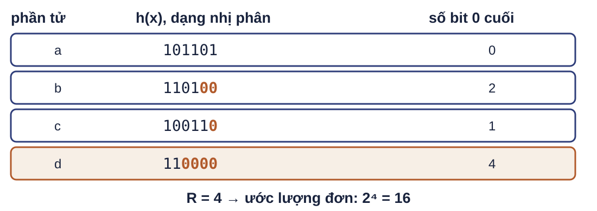
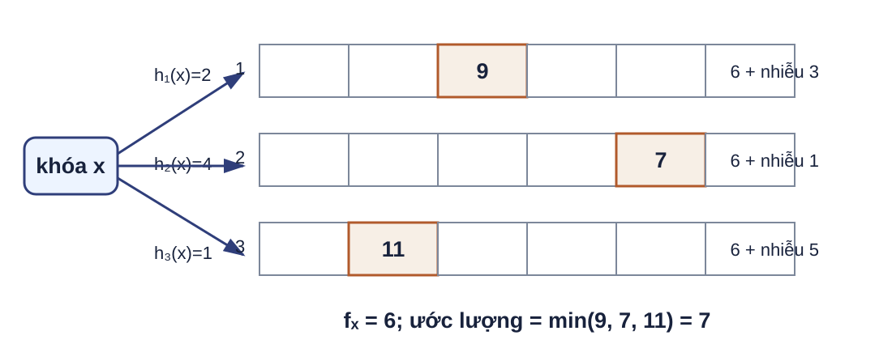
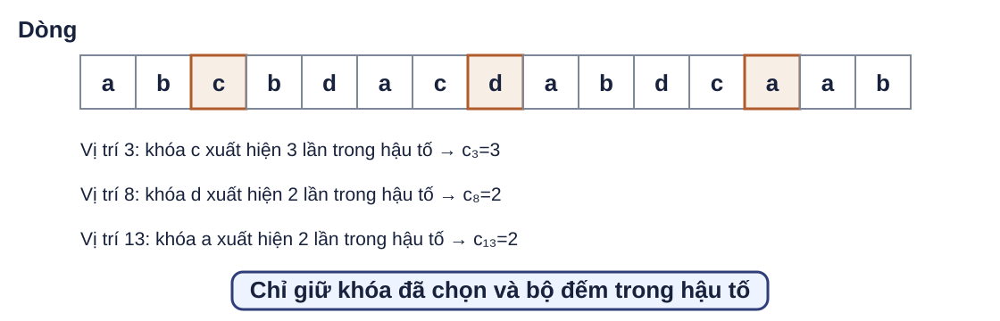
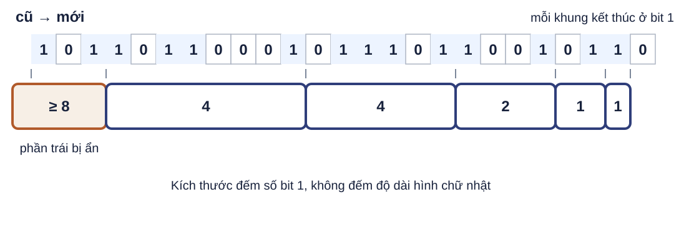
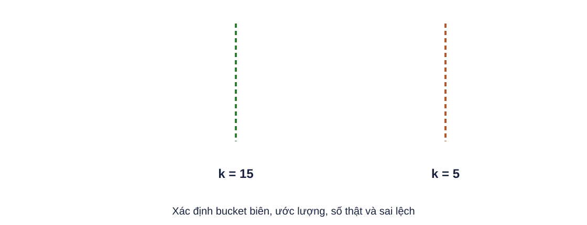
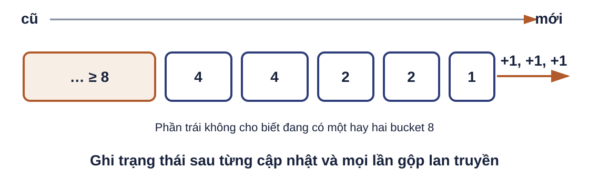

Đếm người dùng phân biệt với bộ nhớ cố định Mỗi lượt đăng nhập phát một khóa. Một trang có thể cần đồng thời nhiều bộ đếm theo tháng hoặc theo trang con.
Câu hỏi: Trạng thái nào có thể thay tập toàn bộ khóa đã thấy?
Tình huống sử dụng trực tiếp từ MMDS tr.142–143: số người dùng duy nhất của một website, nhiều dòng cần xử lý cùng lúc. Đầu ra là số khóa phân biệt; bảng băm chính xác tăng theo số khóa. Một mẫu hiếm báo quy mô 
Trong mô hình băm lý tưởng, giá trị băm của các khóa phân biệt là đều và độc lập. Khi nhiều khóa phân biệt xuất hiện, cơ hội thấy một đuôi dài tăng. Hình minh họa cơ chế, không phải dữ kiện bài tập. Đặc tả Flajolet–Martin Đầu vào và trạng thái Dòng khóa; hàm băm $h$ cho từ bit dài $L$; $R\leftarrow-\infty$.
Cập nhật và đầu ra $R\leftarrow\max(R,\rho(h(x)))$; dòng không rỗng trả $2^R$.
$\rho(y)$ là số bit 0 liên tiếp ở cuối; quy ước $\rho(0)=L$. Dòng rỗng trả $0$.
Điều kiện trước: cùng khóa luôn nhận cùng giá trị băm; miền băm có $L$ bit. Điều kiện sau: $R$ là đuôi dài nhất đã thấy. Khởi tạo âm vô cùng tách dòng rỗng khỏi dòng có $R=0$. MMDS tr.143; quy ước $\rho(0)=L$ làm rõ trường hợp biên hữu hạn. Ngưỡng xuất hiện quanh $2^R$ $\Pr[\rho(h(x))\ge r]=2^{-r}$
$\Pr[\text{không khóa nào đạt }r]=(1-2^{-r})^m\approx e^{-m2^{-r}}$
$m\gg2^r$: gần như sẽ thấy đuôi dài ít nhất $r$.
$m\ll2^r$: ít khả năng thấy đuôi dài ít nhất $r$.
Giả thiết của công thức: băm lý tưởng, đều và độc lập giữa $m$ khóa phân biệt; $r\le L$. $m$ không phải độ dài dòng. Đây là lập luận ngưỡng trong MMDS tr.143, không phải chứng minh $2^R$ không chệch. Một ước lượng có đuôi nặng Trung bình trực tiếp Một giá trị $R$ lớn làm $2^R$ tăng gấp đôi sau mỗi bit 0.
Trung vị trực tiếp Chống ngoại lệ, nhưng đầu ra vẫn chỉ là lũy thừa của 2.
Không gọi $2^R$ là ước lượng không chệch.
MMDS tr.144 chỉ ra kỳ vọng của 2^R trong mô hình lý tưởng có vấn đề đuôi nặng; với chuỗi băm hữu hạn vẫn bị đội lớn. Slide MMDS/Stanford mới có chỗ đảo thứ tự gộp; deck theo sách. Gộp theo trung bình rồi trung vị chia q hàm băm thành nhiều nhóm nhỏ
với mỗi nhóm: lấy trung bình các giá trị 2^R
trả trung vị của các trung bình nhóm
Trung bình trong nhóm tạo độ phân giải; trung vị giữa nhóm giảm ảnh hưởng của nhóm bị đội cao.
Thứ tự chuẩn theo MMDS tr.144 và Stanford 2017 Streams 2: trung bình trong nhóm, rồi trung vị giữa các nhóm. Ví dụ số: các cặp $(4,8),(8,16),(2,4)$ cho các trung bình $6,12,3$ và trung vị $6$. Đây là sửa có chủ ý so với MMDS Streams 2 tr.25 và Stanford 2026 tr.44 bị đảo thứ tự. Chi phí và giới hạn Chi phí với $q$ bản sao Cập nhật $O(q)$; giữ $q$ cực đại, mỗi cực đại cần $O(\log L)$ bit.
Giới hạn Chất lượng phụ thuộc họ băm, số bản sao và cách gộp.
Câu hỏi: Vì sao băm lại cùng khóa nhiều lần không làm $R$ tăng?
Cùng khóa cho cùng $h(x)$, nên phần tử lặp không tạo thêm giá trị băm. Ngoài trạng thái $q$ cực đại còn phải biểu diễn hoặc cố định $q$ hàm băm. MMDS tr.144–145. HyperLogLog chỉ được nêu là hướng kế tiếp ở tổng hợp; nguồn hiện có không đủ cho cơ chế chuẩn.
Đếm tần suất khóa trong dòng chỉ tăng Dòng yêu cầu mạng hoặc lượt xem cần trả nhanh tần suất của một khóa mà không lưu bộ đếm cho mọi khóa.
Điều kiện mỗi cập nhật cộng một lượng không âm.
Tình huống sử dụng từ UMass CS514 Lecture 10: tần suất sản phẩm, video, truy vấn hoặc địa chỉ IP. Phạm vi là dòng chỉ tăng; không suy rộng sang dòng có cập nhật âm. Giá trị thật cộng nhiễu va chạm 
Ví dụ chạy tay: $f_x=6$. Ba ô được hỏi lần lượt chứa $6+3=9$, $6+1=7$, $6+5=11$; lấy min cho $\widehat f_x=7$. Vì mọi cập nhật không âm, mỗi ô luôn ít nhất bằng $f_x$. Đặc tả theo tham số của nguồn $n=\lVert f\rVert_1$, $k\ge1$, $0<\varepsilon\le1$, $0<\delta<1$; khởi tạo mọi $C[j,r]=0$.
Trạng thái và cập nhật $t$ hàng, mỗi hàng $m=\lceil2k/\varepsilon\rceil$ ô.
Tăng $C[j,h_j(x)]$ thêm $\Delta\ge0$.
Truy vấn $\widehat f_x=\min_{1\le j\le t}C[j,h_j(x)]$.
$t=\lceil\log_2(1/\delta)\rceil$.
Mỗi $h_j:U\to\{0,\ldots,m-1\}$ được chọn từ một họ băm độc lập đôi một; các hàng độc lập với nhau.
Đầu vào là khóa trong miền $U$ và lượng tăng không âm; $n$ là tổng khối lượng dòng. Mỗi thao tác dừng sau $t$ hàng. Tham số $k$ đặt ngưỡng khóa nặng $n/k$. Nguồn: UMass CS514 Lecture 10. Từ nhiễu kỳ vọng đến bảo đảm $Y_j=C[j,h_j(x)]-f_x,\qquad \mathbb E[Y_j]\le \frac{n}{m}\le\frac{\varepsilon n}{2k}$
$\Pr\!\left[Y_j\ge\frac{\varepsilon n}{k}\right]\le\frac12$
Với $t$ hàng độc lập và lấy min, xác suất mọi hàng đều xấu không quá $2^{-t}\le\delta$.
Cầu nối: băm đôi một độc lập đủ để tính kỳ vọng nhiễu của một hàng; bất đẳng thức Markov cho xác suất một hàng; độc lập giữa các hàng cho phép nhân xác suất. Vì vậy, với khóa $x$ cố định, $f_x\le\widehat f_x\le f_x+\varepsilon n/k$ với xác suất ít nhất $1-\delta$. Đây là đúng tham số hóa UMass; không trộn với dạng chuẩn khác. Chi phí và giới hạn của Count-Min Chi phí Cập nhật và truy vấn $O(t)$; bộ nhớ $O(mt)$ bộ đếm.
Bảo đảm Một phía cho khóa cố định trong dòng chỉ tăng.
Giới hạn Không tự sinh danh sách khóa nặng; cập nhật âm phá cận dưới.
Câu hỏi: Nếu cần mọi khóa nặng, còn thiếu thành phần nào?
Đáp án: cơ chế sinh hoặc duy trì ứng viên, sau đó dùng phác thảo để kiểm tra. Muốn bảo đảm đồng thời cho nhiều khóa phải thêm lập luận hợp. Kết thúc cụm rút gọn 14 phút; giáo trình MMDS được chọn không có bài tập Count-Min.
Đo độ lệch mà không giữ bảng tần suất Dòng lớn có thể chứa quá nhiều khóa để lưu chính xác mọi $f_i$. Hai dòng cùng độ dài và cùng 11 khóa vẫn có mức tập trung rất khác.
Tình huống sử dụng và hai phân phối lấy trực tiếp từ MMDS tr.146. Đầu ra là mômen bậc hai, còn gọi là surprise number trong nguồn; deck dùng “mômen bậc hai”. Ràng buộc dòng lớn là không lưu bảng tần suất theo mọi khóa. Mômen thống nhất ba câu hỏi $F_k=\sum_i f_i^k$
$F_2$ mức tập trung tần suất
Quy ước 0^0=0 trong F0 theo MMDS tr.145. f_i là số lần khóa i xuất hiện. AMS trong bài tập trung F2. Đếm lại từ một vị trí trong hậu tố 
Trực giác trước ký hiệu: chọn một vị trí, nhớ khóa tại đó rồi chỉ đếm các lần lặp lại từ vị trí ấy đến cuối dòng. Hình vẽ lại MMDS Ví dụ 4.7–4.8, tr.146–147; chưa dùng công thức biến AMS ở trang này. Một vị trí ngẫu nhiên tạo một biến Chọn đều $I\in\{1,\ldots,n\}$. Gọi $c_I$ là số lần khóa tại vị trí $I$ xuất hiện trong hậu tố $I,\ldots,n$.
$X=n(2c_I-1)$
Điều kiện trước: dòng có độ dài $n$ cố định trong phép phân tích. $c_I$ là bộ đếm hậu tố của khóa được chọn, không phải bản thân biến ước lượng; $X$ mới là biến AMS. Với dòng ở M02, $F_2=59$ và ba giá trị $c_I=3,2,2$ tạo $X=75,45,45$. MMDS tr.146–147. Cập nhật một biến AMS chọn vị trí I đều trong 1..n
khi đến I: lưu phần tử e(I), đặt c ← 1
với mỗi phần tử sau I: nếu bằng e(I), tăng c
khi truy vấn: trả n(2c − 1)
Trạng thái mỗi biến: một khóa và một số đếm hậu tố.
Điều kiện dừng: xử lý hết tiền tố cần ước lượng. Nhiều biến độc lập được gộp để giảm dao động; sách không cho cận epsilon-delta cụ thể ở đây nên deck không thêm. Nhóm theo cùng phần tử Giả sử khóa $a$ xuất hiện $f_a$ lần. Các vị trí của $a$, xét từ cuối về đầu, có:
$c_I=1,2,\ldots,f_a$
$2c_I-1=1,3,\ldots,2f_a-1$
Đây là cầu nối từ ví dụ hậu tố sang chứng minh. MMDS tr.147–148. Không thay tính đúng bằng trực giác. Biến AMS không chệch cho $F_2$ $\mathbb E[X]=\frac1n\sum_{I=1}^{n}n(2c_I-1)$
$=\sum_a\left(1+3+\cdots+(2f_a-1)\right)=\sum_a f_a^2=F_2$
Giả thiết: $I$ được chọn đều; $c_I$ đếm đúng hậu tố.
Mệnh đề cần chứng minh là E[X]=F2. Đồng nhất thức tổng số lẻ bằng bình phương có thể chứng minh quy nạp. Nguồn MMDS tr.148. Dòng tăng dùng lấy mẫu hồ chứa khi khóa x thứ n đến, với mỗi bản sao:
với xác suất 1/n: thay khóa đang giữ bằng x; đặt c ← 1
nếu không thay và x bằng khóa đang giữ: tăng c
nếu không thay và x khác khóa đang giữ: giữ nguyên c
Với $q$ bản sao độc lập: cập nhật $O(q)$; giữ $q$ khóa và $q$ bộ đếm.
Câu hỏi: Nếu không thay mẫu nhưng $x$ trùng khóa đang giữ, phải cập nhật gì?
Đáp án: tăng $c$. Sau cập nhật, mỗi vị trí trong tiền tố có xác suất $1/n$ được chọn. Bỏ nhánh trùng khóa làm sai bộ đếm hậu tố. Bộ nhớ là $O(q(\log|U|+\log n))$ bit khi mã khóa cần $O(\log|U|)$ bit; truy vấn và gộp $q$ biến tốn $O(q)$. Nguồn: MMDS tr.148–149 và Bài 8.
Đếm sự kiện gần đây trong cửa sổ bit Mỗi giao dịch vé tạo bit 1 khi là vé phim đang xét, bit 0 nếu là phim khác. Cần số vé trong $N$ giao dịch gần nhất.
Giữ chính xác cửa sổ cần $N$ bit trong trường hợp xấu.
Tình huống sử dụng vé phim từ MMDS tr.151 và 157–159. Lập luận cận dưới trong MMDS 4.6.1 cho thấy biểu diễn chính xác mọi truy vấn hậu tố cần $N$ bit. Bucket giữ số 1 và mốc mới nhất Mỗi bucket Kích thước là số bit 1, một lũy thừa của 2; mốc thời gian là vị trí bit 1 mới nhất.
Không phải đoạn vị trí Bucket có thể chứa bit 0; vùng giữa các mốc không được hiểu là phân hoạch liên tục.
Mốc thời gian lưu modulo $N$ và đủ phân biệt vị trí trong cửa sổ cùng mốc hiện tại. Kích thước không phải số vị trí mà bucket trải qua. MMDS tr.152. Một trạng thái DGIM hợp lệ 
Vẽ lại Hình 4.2, MMDS tr.152. Chuỗi hiển thị đúng từ cũ sang mới. Bucket bên trái còn phần bị ẩn nên chỉ biết kích thước ít nhất 8. Mỗi khung kết thúc ở một bit 1; bit 0 mới nhất nằm ngoài mọi bucket. Sáu bất biến DGIM Đầu phải bucket là một bit 1; mọi bit 1 thuộc đúng một bucket. Không vị trí nào thuộc hai bucket; kích thước là $1,2,4,\ldots$. Mỗi kích thước có một hoặc hai bucket; đi về quá khứ, kích thước không giảm. Các bất biến được đọc trên trạng thái D02: đầu phải, phủ các bit 1, không chồng, lũy thừa 2, một hoặc hai bucket mỗi cỡ và không giảm khi đi về trái. MMDS tr.152–153. Cập nhật duy trì bất biến khi bit mới đến:
loại bucket cũ nhất nếu đã ra ngoài cửa sổ N
nếu bit = 0: dừng
tạo bucket kích thước 1 tại thời điểm hiện tại
khi có 3 bucket cùng kích thước:
gộp hai bucket cũ nhất; giữ mốc phải của bucket mới hơn
Mỗi vòng gộp tăng gấp đôi kích thước nên dừng sau nhiều nhất O(log N) mức. Nguồn MMDS tr.154–155. Trường hợp biên: không có bucket, bit 0, hoặc cascade tới kích thước lớn nhất. Gộp lan truyền như phép nhớ Quy ước: mỗi dãy viết từ cũ → mới.
$1,1,1\rightarrow2,1$
$2,2,2,1\rightarrow4,2,1$
$4,4,4,2,1\rightarrow8,4,2,1$
Luôn gộp hai bucket cũ nhất cùng kích thước.
Nếu gộp hai bucket mới nhất sẽ làm sai mốc phân cách và bất biến truy vấn. MMDS tr.155–156 dùng liên hệ phép nhớ. Đây là ví dụ trạng thái, không phải Bài 4.6.3 đầy đủ. Truy vấn bằng mốc phải Với $1\le k\le N$, tìm bucket cũ nhất có mốc phải nằm trong $k$ vị trí gần nhất.
$\widehat c(k)=\sum_{b\ \text{mới hơn }b^*}|b|+\frac12|b^*|$
Không cần biết đầu trái của $b^*$; nếu không có mốc phải nào trong hậu tố, trả $0$.
Đặc tả chỉ dùng thông tin DGIM thực sự lưu: kích thước và mốc phải. Bucket $b^*$ là bucket cũ nhất có mốc phải còn trong hậu tố; mọi bucket mới hơn được cộng đủ, còn $b^*$ được cộng một nửa. MMDS tr.153–154. Ví dụ mười bit gần nhất Ranh giới nằm trước bit thứ 16 của chuỗi hiển thị; hậu tố là $0110010110$. Bucket cũ nhất có mốc phải trong hậu tố có kích thước 4, nên ước lượng $\tfrac12\cdot4+2+1+1=6$; số thật là 5. MMDS Ví dụ 4.12, tr.153–154. Sai số chỉ nằm ở bucket biên Nếu số thật $c>0$ và ước lượng là $\widehat c$:
$\frac12c\le\widehat c\le\frac32c$
Nếu $c=0$, không có mốc phải trong hậu tố và thuật toán trả $0$.
Gọi $s=\lvert b^*\rvert$ và $A$ là tổng kích thước các bucket mới hơn. Vì mốc phải của $b^*$ nằm trong hậu tố, hậu tố chứa ít nhất một bit 1 của $b^*$. Theo bất biến một hoặc hai bucket mỗi kích thước và thứ tự không giảm về quá khứ, các bucket mới hơn có tổng ít nhất $1+2+\cdots+s/2=s-1$; do đó $A\ge s-1$ và $c\ge A+1\ge s$. Số thật có dạng $c=A+r$ với $1\le r\le s$, còn $\widehat c=A+s/2$. Nếu ước lượng thấp thì $c-\widehat c=r-s/2\le s/2$; nếu ước lượng cao thì $\widehat c-c=s/2-r<s/2$. Trong cả hai trường hợp, $\lvert\widehat c-c\rvert/c\le(s/2)/c\le1/2$, suy ra cận hiển thị. MMDS tr.154. Chi phí DGIM Bộ nhớ $O(\log N)$ bucket, mỗi bucket $O(\log N)$ bit: tổng $O(\log^2 N)$ bit.
Cập nhật Xấu nhất $O(\log N)$; số lần gộp khấu hao $O(1)$.
Truy vấn Duyệt $O(\log N)$ bucket.
Câu hỏi: Vì sao số bucket không tăng theo số bit đã đi qua?
Mỗi kích thước có tối đa hai bucket và chỉ có $O(\log N)$ kích thước. Mốc thời gian modulo $N$ ngăn số bit dùng để biểu diễn mốc tăng không giới hạn. Bộ nhớ tổng là $O(\log^2 N)$, không phải $O(\log N)$ bit. Kết thúc cụm 36 phút.
Bài tập củng cố Năm bài trực tiếp từ MMDS Chương 4. Nộp bảng tính, phép biến đổi và trạng thái bucket theo từng yêu cầu.
Dùng ký hiệu và điều kiện bảo đảm của phần giảng.
Recitation 60 phút. Chia nhóm hoặc làm cá nhân; chữa theo ghi chú các trang sau. Nguồn: MMDS Exercises 4.4.1, 4.5.1, 4.5.3, 4.6.1, 4.6.3. Đuôi băm và ước lượng phân biệt Dòng: $3,1,4,1,5,9,2,6,5$. Xem kết quả băm là số nhị phân 5 bit.
Tính độ dài đuôi cho từng phần tử và ước lượng với:
$h(x)=2x+1\pmod{32}$ $h(x)=3x+7\pmod{32}$ $h(x)=4x\pmod{32}$ 12 phút. MMDS Ex.4.4.1, tr.145. Đáp án theo thứ tự dòng: (a) tất cả đuôi 0, R=0, ước lượng 1; (b) 4,1,0,1,1,1,0,0,1, R=4, ước lượng 16; (c) 2,2,4,2,2,2,3,3,2, R=4, ước lượng 16. Chấm: 6 điểm bảng đuôi, 2 điểm R, 2 điểm ước lượng. Mômen của một dòng ngắn Dòng: $3,1,4,1,3,4,2,1,2$.
Tính mômen bậc hai và mômen bậc ba. Trình bày bảng tần suất trước khi tính tổng.
8 phút. MMDS Ex.4.5.1, tr.149–150. Tần suất: f1=3; f2=f3=f4=2. F2=3^2+3·2^2=21. F3=3^3+3·2^3=51. Chấm: 4 điểm bảng tần suất, 3 điểm mỗi mômen. Mọi bộ đếm hậu tố của AMS Với dòng ở X02, tại mỗi vị trí $i=1,\ldots,9$, tính $c_i$: số lần khóa ở vị trí $i$ xuất hiện từ vị trí $i$ đến cuối dòng.
Sản phẩm: một hàng gồm chín giá trị $c_i$, theo đúng thứ tự vị trí. Không cần tính $X_i=9(2c_i-1)$.
12 phút. MMDS Ex.4.5.3, tr.150. $c_i=[2,3,2,2,1,1,2,1,1]$. Các biến AMS tương ứng là $[27,45,27,27,9,9,27,9,9]$ và trung bình cả chín bằng 21; đây chỉ là phép tự kiểm. Chấm: 1 điểm mỗi $c_i$ và 1 điểm đúng thứ tự. Truy vấn trên Hình 4.2 
Ước lượng số bit 1 trong $k=5$ và $k=15$ vị trí cuối; so với số thật và báo sai lệch.
12 phút. MMDS Ex.4.6.1, tr.157; Hình 4.2 tr.152. $k=5$: ước lượng 3, thật 3, sai lệch 0. $k=15$: ước lượng 10, thật 9, lệch +1, sai số tương đối $1/9$. Chấm mỗi trường hợp 5 điểm: bucket biên, tổng, số thật, sai lệch. Ba bit 1 và chuỗi gộp DGIM 
Thêm lần lượt ba bit 1; sau mỗi lần, ghi dãy kích thước từ cũ → mới và mọi phép gộp. Giả sử các bit 1 đang thấy chưa rời cửa sổ.
16 phút. MMDS Ex.4.6.3, tr.157; Hình 4.3 tr.155. Trạng thái đầu tự chứa trong hình có đuôi $\ldots,4,4,2,2,1$. Sau bit thứ nhất: $\ldots,4,4,2,2,1,1$. Sau bit thứ hai: tạo ba bucket 1, rồi gộp lan qua 2 và 4, cho $\ldots,8,4,2,1$. Sau bit thứ ba: $\ldots,8,4,2,1,1$. Phần trái chỉ khẳng định có ít nhất một bucket 8; nếu trước đó đã có hai bucket 8, lần gộp tạo thêm 8 sẽ tiếp tục lên 16 và có thể cao hơn. Chấm: 3+5+3 điểm ba trạng thái, 5 điểm nhận diện và xử lý nhánh chưa xác định. Tổng phần bài tập 60 phút.